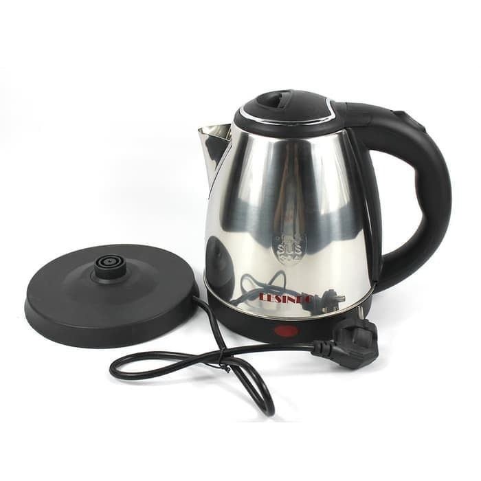
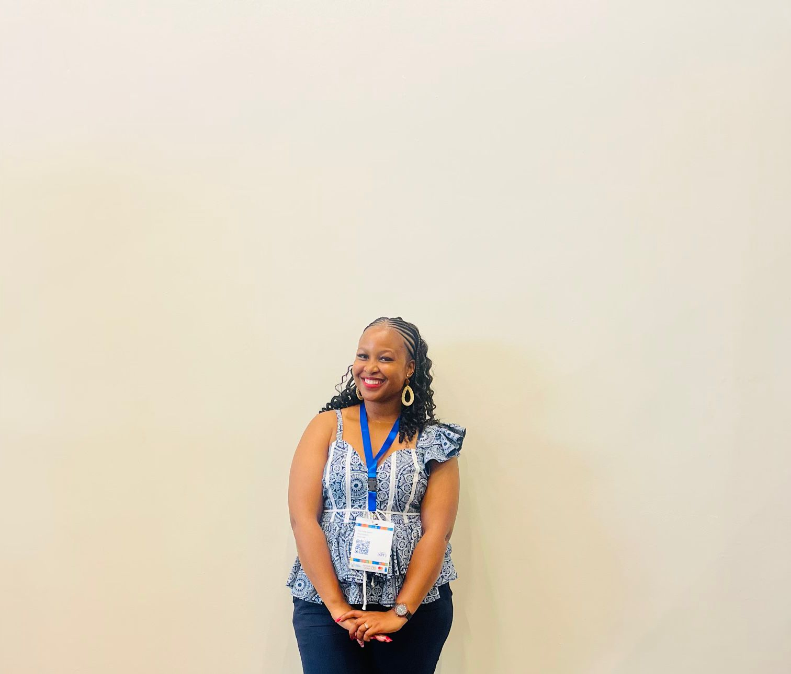
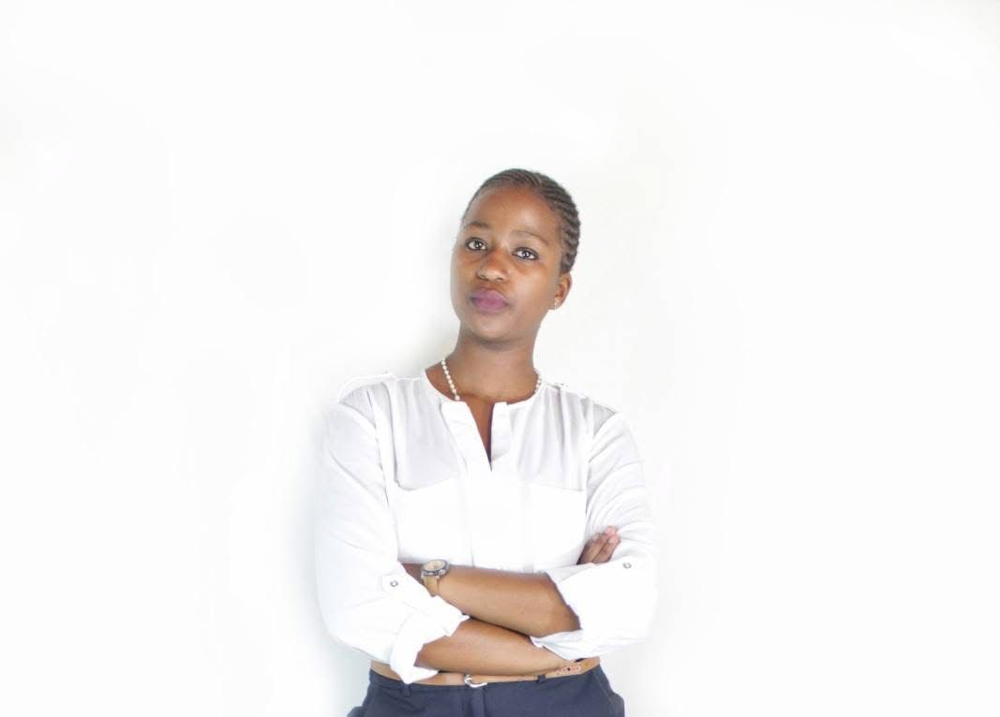

How Karabo's Second Steam started and what drives us forward
Karabo's Second Steam was started in 2022 byKarabo khakhane in Ha Mafafa, Maseru. It all started when Karabo noticed that many people were throwing away electrical kettles that only had small problems. At the same time, buying a new kettle from the shops was too expensive for many families.
Karabo decided to fix this problem. She started collecting broken kettles, repairing them, and selling them at prices people could afford. The community loved the idea and the business grew quickly from a backyard workshop into a proper operation.
Today Karabo's Second Steam has sold over 200 kettles, has a small team, and is one of Maseru's most trusted places to buy a refurbished appliance.

Karabo in the workshop, Ha Mafafa, Maseru
What we believe in and where we are going.
To make quality electrical appliances accessible to every household in Lesotho by restoring and selling refurbished kettles at honest, affordable prices.
To become Lesotho's leading refurbished appliance business. By 2027 we want to expand beyond kettles to toasters, irons, and other small appliances.
The principles that guide how we run our business every day.
We always tell customers the real condition of each kettle. No surprises, no hidden problems. What you see is what you get.
We only sell kettles that we would be happy to use ourselves. Every unit is tested properly before it goes to a customer.
The people who make Karabo's Second Steam work every day.

Founder & Lead Technician
Karabo does most of the refurbishment work and manages the overall business. 3+ years experience in appliance repair.
Sales & Deliveries
Tšehlo handles customer orders, arranges deliveries around Maseru and makes sure every customer is happy.

Marketing
Reabetsoe Lekhutle manages our Facebook page and WhatsApp catalogue to spread the word about our products and deals.